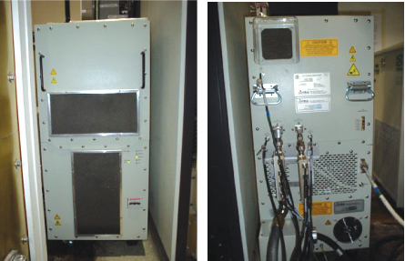
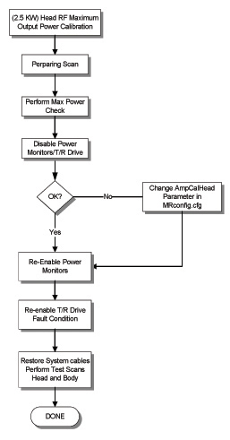
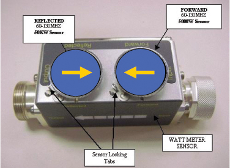
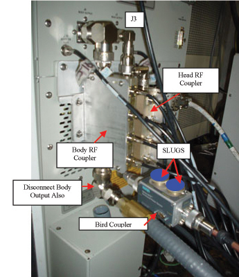
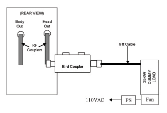
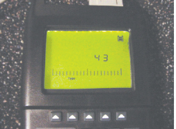
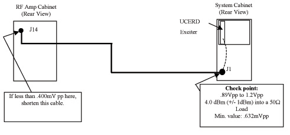

Operating Documentation
Direction 5133330-3, Rev# 14
Signa EXCITE HD 3.0T Service Methods
Module Version 1.0, Version Date 5/3/07
Operating Documentation |
| Required Persons | Preliminary Reqs | Procedure | Finalization |
|---|---|---|---|
| 1 | Not Applicable | 45 mins | Not Applicable |
This procedure calibrates the Head Mode of the 25 KW RF Amplifier (Illustration 1) to 3.3 KW, using the power Measurement Kit (Wattmeter).
Illustration 1: 25 KW RF Amplifier front and back

Illustration 2: HEAD CALIBRATION FLOWCHART

| Last Update | 01/17/2005 |
| Item | Qty | Effectivity | Part# | Manufacturer | |
|---|---|---|---|---|---|
| Power Measurement Kit (Wattmeter Kit) | 1 | - | 2372868 | - | |
| 10 inch Crescent Wrench | 1 | - | - | - | |
| Medium Phillips Screwdriver | 1 | - | - | - | |
| ||||
| FATAL ELECTRIC SHOCK HAZARD!! | ||||
| Dangerous voltages are present though out the RF cabinet when energized. | ||||
| TO PREVENT FATAL ELECTRIC SHOCK, MAKE SURE THE RF AMPLIFIER IS DISABLED WHEN CONFIGURING THE CALIBRATION TOOLS. |
| ||||
| PROPERTY DAMAGE! PREVENT COIL AND ASSOCIATED SWITCH DAMAGE, BY REMOVING ALL PHANTOMS AND HARDWARE (I.E., HEAD COIL, SURFACE COIL...) FROM THE MAGNET BORE. | ||||
| ||||
| Possible equipment damage. Do not operate the RF amplifier with an improper load connected to its output. Doing so may permanently damage the amplifier. | ||||
| ||||
| Property Damage! Prevent coil and associated switch damage, by Removing all phantoms and hardware (i.e., Head Coil, surface Coil...) from the magnet bore. | ||||
Verify that the system is idle and all coils have been removed from magnet bore.
Remove the front cover of the EXCITE Systems Cabinet.
On the front of the Driver Module, disable T/R error reporting by setting the TR switch to the RT DISABLE (disable faults) position. (see Illustration 3).
Illustration 3: DRIVER MODULE SWITCH

| NOTE: | HV, DD and MC should remain set to Enable. |
| ||||
| IT IS VERY IMPORTANT THAT THE CORRECT ATTENUATION SENSOR SLUGS BE PLACED IN THE FORWARD AND REFLECTED PORTS OF THE BIRD COUPLER. BE SURE YOU FOLLOW PROCEDURE FOR THE HEAD SETUP ((see Illustration 4))!!! | ||||
Insert the 5000W Element into the Forward Sensor Port. (Blue- 4300A374-6). Make sure the arrow on the element points in the direction of the arrow (from Input to Output) on the Sensor. Lock Element in place using the locking tab on the sensor. ((see Illustration 4))
Illustration 4: RF COUPLER SETUP FOR HEAD MODE

Insert the 50KW Element into the Reflected Sensor Port. (Blue- 4300A374-3). Make sure the arrow on the element points in the opposite direction of the arrow (from output to input) on the Sensor. Lock Element in place using the locking tab on the sensor. (See Illustration 4) The reflected port is not used during this procedure. Placing the 50KW element into the reflected port is just a safety measure, and is not used during Head calibration.
| ||||
| ELECTRICAL/RF BURN HAZARD! | ||||
| RF BURNS AS A RESULT OF DISCONNECTING HELIAZ CABLES WHILE THE SYSTEM IS SCANNING. | ||||
| PREVENT POSSIBLE RF BURNS WHEN DISCONNECTING HELIAX CABLES FROM J3 OR J4 ON THE RF AMP BY VERIFYING THAT THE SYSTEM IS NOT MANUALLY PRESCANNING OR SCANNING. VERIFY THAT THE SCAN DESKTOP ICON DISPLAYS THE “IDLE” MESSAGE AND THE RF ENABLE SWITCH IS IN THE "OFF" POSITION. |
| ||||
| Possible equipment damage. Do not turn connect/disconnect Wattmeter Sensor while Meter is ON. Always turn Meter OFF prior to plugging/unplugging Sensor. | ||||
Verify scanner is in “idle”, turn off RF Enable at the Exciter (FP-I/O) or disconnect J14 RF Drive Input) from the back of the RF amplifier.
Disconnect the Head cable J3 “Head Output” from the bottom of the RF Coupler at the back of the RF Amplifier.
To protect the Body Amplifier section, disconnect the Body cable J4 “Body Output” from the bottom of the RF Coupler at the back of the RF Amplifier as well.
3. Connect the Input of the Bird Coupler to J3 on the back of the RF Amplifier. (See Illustration 5 and Illustration 6). The arrow on the Bird Coupler should be pointing in the direction of the RF signal, AWAY from the amplifier.
Illustration 5: CONNECTION OF RF COUPLER TO HEAD OUTPUT

Connect one end of the Wattmeter cable to the Wattmeter Sensor connector, (RS232 is unused). Connect the other end to the Coupler.
Illustration 6: COMPLETE HEAD OUTPUT TEST SETUP

Reconnect J14 on the back of the amplifier. Switch RF Enable to ON.
Make sure to plug in the fan for the dummy load. AT NO TIME should you use this dummy load without its fan running.
| ||||
| DO NOT APPLY RF POWER TO THE HYBRID SPLITTER WITHOUT ITS FAN IN OPERATION. DOING SO WILL RESULT IN CATASTROPHIC DAMAGE TO THE DUMMY LOAD. | ||||
Reconnect J14 on the back of the amplifier. Switch RF Enable to ON.
Simply switching it off and then back on resets the Digital Wattmeter. In case of confusion with resetting the Digital Wattmeter, press the “On” button twice and start the procedure over.
The Arrow Buttons Point to the corresponding item within the LCD Display, directly above the button. (See Illustration 7) for example:
Illustration 7: WATT METER OPERATION

Pressing the Shift Button shifts the function of the Arrow Key.
Press the <ON> button on the Wattmeter. (If coupler and sensor is not correctly attached to the amplifier you will get a “No Sensor” indication)
Select the arrow up button under Scale.
Type: 5000 to set the range.
Select <Enter> button
Check the setting, by selecting the arrow up button under Scale once again.
Press <Enter> to exit this mode.
Select the arrow up button under Fwd Units make sure the scale reads “W” (or “kW “on some watt meters). If the scale reads dBm, select the arrow button under Fwd Units again, to toggle the scale to read “W” (Watts or kW kiloWatts) on the TOP, Forward Power scale. Ignore the BOTTOM, reflected Power scale value. It is not used during Maximum Power Calibration.
Select the <Shift> button.
Select the arrow up button under Setup.
Verify it reads “43”. If not, type the number “43” followed by the enter button.(Illustration 8 shows what should be displayed at this time).
| NOTE: | This action displays the Sensor Type configured in the Wattmeter. This procedure uses Sensor ” Type 43”, which is optimized for peak power measurement. |
Illustration 8: WATTMETER DISPLAY SET TO READ PEAK POWER SENSOR

Select <Enter> button.
Select the arrow up button under Type, change unit of measurement to Peak. (Illustration 8 and Illustration 9 show what should be displayed at this time).
Illustration 9: WATTMETER SET TO DISPLAY PEAK POWER

The meter is now configured to read RF Peak Power, in Watts for the Head Maximum Output calibration.
| NOTE: | To make sure that we correctly measure the true Head Mode output power level, the ampCalHead value in the Mrconfig.cfg file must intitally be set to zero (0). |
Select the Service Desktop Manager. (Tools Menu)
Select [Utilities]
Select [Config File Manager]
Select [Start]
Select [MR Config] File
Scroll to Head Coil Amp Calibration Factor parameter.
Write down the value: ampCalHead= ________. (Data Sheet)
| NOTE: | If you are calibrating the RF amplifier for the first time the value of the ampCalHead and ampCalHead parameters will be set at the default value of zero (0). |
If necessary, change: ampCalHead= 0
Select [Quit] (To save new ampCalHead and ampCalBody values.)
When asked to really quit, select [Yes]
Popup- Mrconfig file has been changed. [Click Save]
Reboot Signa.
For systems using a UTNS.
Disable UTNS Counting:
Open a C-Shell.
At the command prompt type:
mgd_tns -d m=a 0<Enter>
Disable UTNS Notching
Go to the Service Desktop and Open a C-Shell.
At the command line type:
mgd_tns -b m=a 0<Enter>
| ||||
| Property Damage! Prevent coil and associated switch damage, by Removing all phantoms and hardware (i.e., Head Coil, surface Coil...) from the magnet bore. | ||||
Prepare the system to scan in Head mode using Table 1.
Table 1: SCAN PRESCRIPTION - HEAD CALIBRATION
|
Select [Research Options] with the right mouse cursor and select [Download]
Select [Manual Prescan].
Select [Scan TR]
Set the Transmit Gain to 50. Make sure everything is functioning normally and you are getting a reading on the Wattmeter.
Set the Transmit Gain to 180. Make sure everything is functioning normally and you are getting a reading on the Wattmeter. Allow scanner to pulse at TG 180 for 6 minutes. This is due to the drop in gain that occurs over the 6 minutes period.
Slowly increase the TG towards 200 while watching the wattmeter. DO NOT EXCEED 3.3KW.
If 2.5KW (+/- 1KW) is reached at a TG of 200 then no further adjustment is necessary. Reduce TG to zero and proceed to section 5 Finalization.
If the amplifier trips out before 3.3KW (+/- 1KW) is reached, the output is out of specification. Proceed to the following Section, ( Step )
If the amplifier reads less than 3.3KW at a TG of 200, then check the Appendix A for troubleshooting suggestions.
Allow the amplifier to reset and slowly increase the TG to 200. As you get near the point that the amplifier tripped increase the TG in 1-count increments until the amplifier trips off. 2. Write Down the Actual TG Trip Value.
The Actual TG Trip value must be subtracted from the maximum TG Value needed (200). (See example of calculation in Table 2.)
Table 2: Subtract Actual TG Value from 200
| 200 | EXAMPLE: | 200 | |
| Actual TG Trip Value: | Actual TG Trip Value: | 196 | |
| New AmCalHead Value: | New AmCalHead Value: | 4 |
| NOTE: | 1dB gain = 10 counts in AmpCal Factor. |
| NOTE: | If You Cannot Attain The Desired Voltage Level Stop Here. Check Cables And Connectors Between The UCERD, DRSM And The Amplifier. If You See No Improvement, Proceed To Appendix A- Checking The Exciter Output. |
Select the Service Desktop Manager. (Tools Menu)
Select [Utilities]
Select [Config File Manager]
Select [Start]
Select [MR Config] File
Find the ampCalHead parameter in the Mrconfig.cfg file.
Change the ampCalHead value to the New ampCalHead value calculated in Table 2.
Select [Quit]. (To save the new value)
When asked to really quit, select [YES].
After updating the file, go to top of window and select [File] and then [Save].
Select [Quit].
Reboot Signa
The software uses the new ampCalHead value to match TG and maximum output of amplifier at 25KW.
Check the new ampCalHead value by repeating Step .
To further troubleshoot with the On Line Center and/or Milwaukee Engineering, complete RF Power Calibration procedure now, and when it becomes possible to perform SPT do so. Note the TG levels reported by SPT for both Head and Body. Report these values back to the OLC or Service Engineering. With these values it will help determine the proper course of action.
Illustration 10: CABLE PATH UCERD TO RF AMPLIFIER

The slower the Oscilloscope the more “Signal Roll off” it will experience. This “roll off” is unique to every oscilloscope. Some are worse than others. The frequency you are measuring is 127.7MHz signal. There is no “standard” Roll off value that you can use. Scope Roll off will also affect a 350MHz scope, but it may not be as severe. “Roll Off’ will make the UCERD output look smaller than it really is. Determine rolloff by performing the Oscilloscope Roll-off Calculation, Using this roll-off value re-calculate the Calculated Voltage Level.
Verify scanner is in “idle”, turn off RF Enable at the Exciter (FP-I/O Board) or disconnect J14 from the back of the RF amplifier.
Disconnect the Power Measuring equipment from the system.
Connect the Original Body Output Cable to the bottom of the RF Coupler at the back of the RF Amplifier, J4.
Connect the Original Body Output Cable to the bottom of the RF Coupler at the back of the RF Amplifier, J4.
Re-enable RF Enable at the Exciter (FP-I/O Board) or reattach the RD Drive Cable to J14 at the rear of the RF amplifier.
Re-Enable TR error reporting by enabling the TR switch on the front of the Driver Module. See Illustration 3.
Replace all covers.